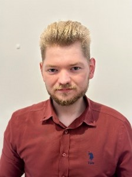

Gozman Cristian
Staf Engineer

Summary
Over the past three years, my experience as an MES Engineer has been focused on Life Science and Pharmaceutical projects, allowing me to expand my knowledge in this field. During this time, I have enhanced my technical skills by understanding client functional requirements, developing recipe designs and providing on-site support activities. Furthermore, I have improved my ability to effectively organize and prioritize data and assignments.
Education
- Bachelor’s degree in Automation and Computer Science Technical University of Cluj-Napoca (2016-2020)
Training and Certifications
- 7080 - Syncade Overview
- 7083 - Syncade Equipment Tracking
- 7181 - Syncade Recipe Authoring
- GAMP 5 Certification
- Project Engineering Processes (ALL003)
Work Experience
- MES Engineer - Emerson S.A
- Aug 2019-Ian 2023
- Expertise in Emerson - Syncade and DeltaV systems
- Recipe Authoring development
- Qualification and validation activities
- MES Consultatnt - Nagarro S.A
- Feb 2023-Present
- Expertise in Nagarro - Rockwell PharmaSuite
- Recipe Authoring development
- Qualification and validation activities
Skills
- Areas of competencies include MES implementation for life science.
- Expertise in Emerson - Syncade and DeltaV systems
- Problem-solving abilities.
- Pharmaceutical regulatory compliance expert in area of Validation and Qualification
Other